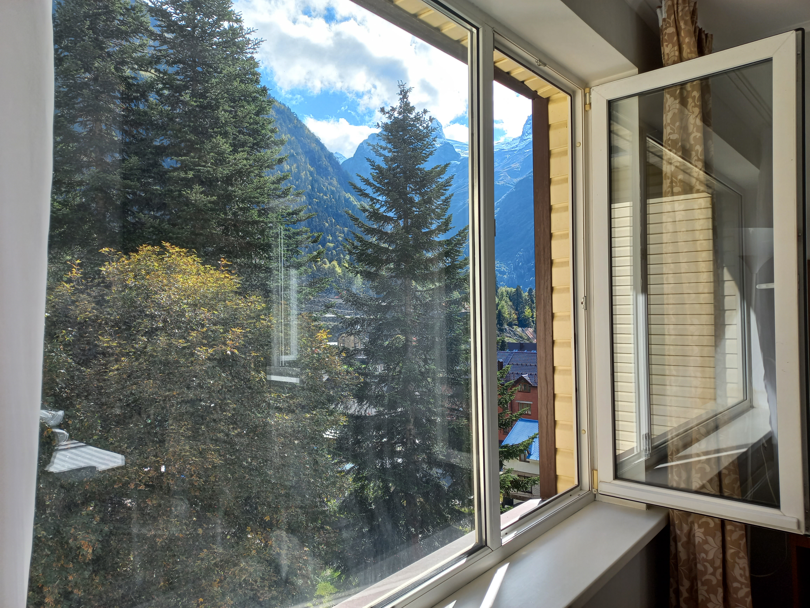

Для написания кода подойдет практически любой текстовый редактор. Я, напрмер, пользуюсь Notepad++.
Посмотреть результат можно в браузере, даже не нужно подключение к интернету!
Для создания страницы в HTML коде придётся разобраться, что такое теги, атрибуты, ссылки...
Теперь можно создать HTML-страницу:
Структурируем страницу
Наполняем содержанием:
заголовки
текст
списки
картинки
таблицы
Оформляем:
стили
навигация
боковые панели
выделение текста - жирный шрифт, курсив и т.п.
ссылки
страницы
... и разместить её в интернете, но об этом потом.
2. Элементы оформления
В HTML имеется масса стандартных тегов для разделения содержимого сайта в отдельные блоки <header>, <main>, <footer>, <article>, <nav> и т. д. Всё это есть в интернете в справочниках по HTML. Каждый блок можно офрмить по своему усмотрению, установить отступы, настроить цвета, сделать рамочки и т.п..
Чтобы текст не выглядел как одна бесконечная строка его можно разбить на параграфы и озаглавить, его (текст) можно выделить подчеркнуть или зачеркнуть, сделать отступы между параграфами, вставить горизонтальную линию, создавать списки, вставлять таблицы и изображения. Короче - полный набор для творчества, главное не утонуть во всём этом.
3. Цитаты
В мире, занесенном слоем песка толщиной в сотни метров, самая востребованная профессия — дайверы.
Это люди, которые с помощью специального снаряжения погружаются в песчаные глубины,
добывая оттуда реликты старой цивилизации…
Хью Хауи. Песок
4. Боковая панель
Ещё одна цитата ))
Боковая панель и сайдбар — это не одно и то же!
Если <aside> используется внутри тегов <section> или <article>, контент должен быть «связан» с ним.
Если <aside> используется вне тегов <section> или <article> — например, непосредственно внутри <body> — он содержит контент, связанный с сайтом, например: дополнительную навигацию, последние публикации в блоге, последние комментарии и т. д.
Ошибкой будет поместить основной элемент, который визуально оформлен в виде боковой панели (например, логотип или главную навигационную панель), в тег <aside>.
<aside> прост в использовании, если помнить, что это всего лишь HTML-тег, то есть мы используем его в соответствии со смыслом контента, который он несет, а не с визуальным аспектом сайта — эту часть нужно оформлять только с помощью CSS.
Вольный перевод с просторов интернета
Чтобы сделать ссылку на место в коде, действуйте в два шага:
сначала задайте уникальный id элементу, затем создайте ссылку, которая указывает на этот id через href с символом #.
Это удобный способ организовать удобную навигацию по длинным документам.
5. Списки определений
Кроме обычных нумерованных и ненумерованных списков есть ещё отдельная категория - списки определений. Вот например:
Переходные процессы
Процессы, которые возникают в электрических цепях после того, как один из параметров цепи испытал
скачкообразное (очень быстрое) изменение. Например, подключенный к цепи источник ЭДС
(генератор тока или напряжения) формирует прямоугольный импульс напряжения или тока, или в цепи c
подключенным постоянным источником ЭДС происходит коммутация отдельных элементов цепи с помощью ключей.
Генератор напряжения
Устройство, напряжение на выходе
которого не зависит от величины тока, протекающего через этот
генератор. Внутреннее сопротивление такого генератора принимается
равным нулю, а в реальности – это источник ЭДС с внутренним сопротивлением, много меньшим сопротивления внешней цепи.
6. Таблицы
Название таблицы
Заголовок 1
Заголовок 2
Ячейка 1
Ячейка 2
Ячейка 3
Ячейка 4
Ячейка 5 - объединяем ячейки по горизонтали, например, внизу таблицы можно сделать графу "Итого:"
Один из способов стилизации страницы - таблица. Вместо сайдбара можно разбить страницу на несколько частей в виде таблицы.
Будет выглядеть примерно так
Главное
1. Начало
Добро пожаловать.
Эта страница делается исключительно как шпаргалка.

Карточку можно выделить отдельно и задать для неё свой стиль. Стили можно задавть прямо в .html файле или в файле .css
7. Страницы
Для удобства навигации, на мой взгляд, лучше подойдёт многостраничный сайт. Обычно для этого есть два пути. Один из них - создать новый .html файл в главном каталоге и сделать ссылку на него.